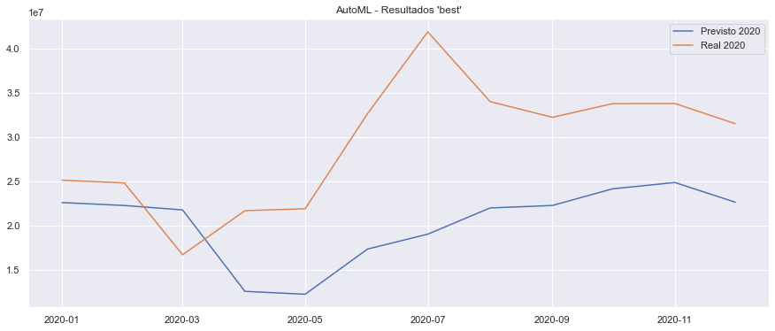

AutoTS 2020¶
# Importa bibliotecas; inicializa variáveis; define funções.
import pandas as pd
import matplotlib as mpl
import matplotlib.pyplot as plt
from datetime import datetime
import auto_ts as AT
import math as mt
from sklearn.metrics import mean_squared_error
import seaborn as sns
colunas = ['data','total','ibc','pib','consumo', 'ICST-R', 'geracaoGWh','IndGeral']
mpl.rcParams['figure.figsize'] = (8, 6)
mpl.rcParams['axes.grid'] = False
dados_autoML = pd.read_csv('dadosRonaldo.csv')
dados_autoML.head()
df = dados_autoML[colunas]
df = df.set_index('data')
df.index = pd.to_datetime(df.index)
df.info()
print ("Rows : " ,df.shape[0])
print ("Columns : " ,df.shape[1])
print ("\nFeatures : \n" ,df.columns.tolist())
print ("\nMissing values : ", df.isnull().any())
print ("\nUnique values : \n",df.nunique())
df
---------------------------------------------------------------------------
ImportError Traceback (most recent call last)
<ipython-input-1-0e5f51a1ee2f> in <module>
4 import matplotlib.pyplot as plt
5 from datetime import datetime
----> 6 import auto_ts as AT
7 import math as mt
8 from sklearn.metrics import mean_squared_error
~/adp255/env_adp255/lib/python3.9/site-packages/auto_ts/__init__.py in <module>
39 #######################################
40 # Models
---> 41 from .models import BuildBase, BuildArima, BuildAutoSarimax, BuildVAR, BuildML
42 from .models.build_prophet import BuildProphet
43
~/adp255/env_adp255/lib/python3.9/site-packages/auto_ts/models/__init__.py in <module>
2 from .ar_based import BuildArima, BuildSarimax, BuildAutoSarimax, BuildVAR
3 from .build_ml import BuildML
----> 4 from .build_prophet import BuildProphet
5 from .build_pyflux import build_pyflux_model
~/adp255/env_adp255/lib/python3.9/site-packages/auto_ts/models/build_prophet.py in <module>
17 import matplotlib.pyplot as plt # type: ignore
18
---> 19 from fbprophet import Prophet # type: ignore
20 from fbprophet.diagnostics import cross_validation
21 from fbprophet.diagnostics import performance_metrics
~/adp255/env_adp255/lib/python3.9/site-packages/fbprophet/__init__.py in <module>
6 # of patent rights can be found in the PATENTS file in the same directory.
7
----> 8 from fbprophet.forecaster import Prophet
9
10 __version__ = '0.5'
~/adp255/env_adp255/lib/python3.9/site-packages/fbprophet/forecaster.py in <module>
18
19 from fbprophet.diagnostics import prophet_copy
---> 20 from fbprophet.make_holidays import get_holiday_names, make_holidays_df
21 from fbprophet.models import prophet_stan_model
22 from fbprophet.plot import (plot, plot_components, plot_forecast_component,
~/adp255/env_adp255/lib/python3.9/site-packages/fbprophet/make_holidays.py in <module>
14 import pandas as pd
15
---> 16 import fbprophet.hdays as hdays_part2
17 import holidays as hdays_part1
18
~/adp255/env_adp255/lib/python3.9/site-packages/fbprophet/hdays.py in <module>
14
15 from convertdate.islamic import from_gregorian, to_gregorian
---> 16 from holidays import WEEKEND, HolidayBase, easter, rd
17 from lunardate import LunarDate
18
ImportError: cannot import name 'easter' from 'holidays' (/Users/ronaldogamermann/adp255/env_adp255/lib/python3.9/site-packages/holidays/__init__.py)
Explorando o conjunto de dados utilizados.
ec_df = df
ec_data = ec_df['total']
ec_data.head()
df.describe()
ec_data.plot(grid=True)
<matplotlib.axes._subplots.AxesSubplot at 0x1e099d58860>
Vamos avaliar o funcionamento da AutoTS, utilizando os dados de 2014 até 2019 para prever o ‘total’ em 2020.
ec_df_2020=ec_df.loc['2020']
ec_data_2020=ec_df_2020['total']
ec_data_2020.plot(grid=True)
ec_data_2020.plot.bar()
<matplotlib.axes._subplots.AxesSubplot at 0x1e09aadc438>
final_df = df.copy()
final_df=final_df.reset_index()
final_df=final_df[colunas]
final_df.head(10)
| data | total | ibc | pib | consumo | ICST-R | geracaoGWh | IndGeral | |
|---|---|---|---|---|---|---|---|---|
| 0 | 2014-01-01 | 13427897 | 2.75 | 455935.0 | 40279759.00 | 97.8 | 50045.962407 | 53.1 |
| 1 | 2014-02-01 | 14152120 | 3.13 | 450358.8 | 41653487.00 | 96.7 | 46459.730274 | 52.3 |
| 2 | 2014-03-01 | 13710770 | 3.09 | 462159.8 | 40269429.00 | 96.3 | 48004.277170 | 52.4 |
| 3 | 2014-04-01 | 12602895 | 2.37 | 468767.5 | 39591854.00 | 92.6 | 45412.583753 | 49.2 |
| 4 | 2014-05-01 | 14603442 | 2.23 | 473347.1 | 39100499.00 | 94.6 | 44890.282526 | 47.9 |
| 5 | 2014-06-01 | 13296350 | 1.85 | 458516.5 | 37726472.88 | 93.1 | 41970.305389 | 47.4 |
| 6 | 2014-07-01 | 14742923 | 1.45 | 481994.0 | 37866809.00 | 91.6 | 42991.945569 | 46.4 |
| 7 | 2014-08-01 | 14540126 | 1.13 | 477052.9 | 38550694.00 | 92.0 | 42636.899277 | 46.5 |
| 8 | 2014-09-01 | 15667226 | 0.85 | 476520.6 | 38894976.00 | 90.5 | 43171.224770 | 46.5 |
| 9 | 2014-10-01 | 14301399 | 0.49 | 493304.7 | 40100440.59 | 88.0 | 46186.817965 | 45.8 |
Preparando os conjuntos de treino e teste; também outros parâmetros usado pelo AutoTS.
traindata = final_df[:72]
testdata = final_df[72:84]
ts_column = 'data'
sep = ','
target = 'total'
print(traindata.shape, testdata.shape)
(72, 8) (12, 8)
# Dados de treino.
traindata.head()
| data | total | ibc | pib | consumo | ICST-R | geracaoGWh | IndGeral | |
|---|---|---|---|---|---|---|---|---|
| 0 | 2014-01-01 | 13427897 | 2.75 | 455935.0 | 40279759.0 | 97.8 | 50045.962407 | 53.1 |
| 1 | 2014-02-01 | 14152120 | 3.13 | 450358.8 | 41653487.0 | 96.7 | 46459.730274 | 52.3 |
| 2 | 2014-03-01 | 13710770 | 3.09 | 462159.8 | 40269429.0 | 96.3 | 48004.277170 | 52.4 |
| 3 | 2014-04-01 | 12602895 | 2.37 | 468767.5 | 39591854.0 | 92.6 | 45412.583753 | 49.2 |
| 4 | 2014-05-01 | 14603442 | 2.23 | 473347.1 | 39100499.0 | 94.6 | 44890.282526 | 47.9 |
# Dados de teste.
testdata.head()
| data | total | ibc | pib | consumo | ICST-R | geracaoGWh | IndGeral | |
|---|---|---|---|---|---|---|---|---|
| 72 | 2020-01-01 | 25113021 | 0.91 | 617701.0 | 41184302.53 | 94.2 | 50862.73416 | 65.3 |
| 73 | 2020-02-01 | 24799556 | 0.73 | 609810.8 | 40750716.72 | 92.8 | 47820.78192 | 64.7 |
| 74 | 2020-03-01 | 16697718 | 0.75 | 616351.2 | 40989914.14 | 90.8 | 49069.64952 | 60.3 |
| 75 | 2020-04-01 | 21669098 | -0.51 | 545941.7 | 37130625.61 | 65.0 | 41010.99120 | 34.5 |
| 76 | 2020-05-01 | 21893223 | -2.11 | 559345.4 | 36105010.23 | 68.0 | 41437.50408 | 34.7 |
Rodando o AutoTS: ferramenta realizando o set inicial e o fit.
“WARNING: Running best models will take time… Be Patient…” <= Aviso da ferramenta…
model = AT.auto_timeseries(score_type='rmse',
time_interval='M',
non_seasonal_pdq=None, seasonality=True, seasonal_period=12,
model_type=['best'],
verbose=2)
"""
Lista de Modelos permitidos (10): best, prophet, stats, ml, arima, ARIMA,
Prophet, SARIMAX, VAR, ML.
"""
model.fit(traindata, ts_column,target)
Start of Fit.....
Running Augmented Dickey-Fuller test with paramters:
maxlag: 31 regression: c autolag: BIC
Results of Augmented Dickey-Fuller Test:
+-----------------------------+------------------------------+
| | Dickey-Fuller Augmented Test |
+-----------------------------+------------------------------+
| Test Statistic | -1.8110599224858244 |
| p-value | 0.37498473849007014 |
| #Lags Used | 0.0 |
| Number of Observations Used | 71.0 |
| Critical Value (1%) | -3.526004646825607 |
| Critical Value (5%) | -2.9032002348069774 |
| Critical Value (10%) | -2.5889948363419957 |
+-----------------------------+------------------------------+
this series is non-stationary. Trying test again after differencing...
After differencing=1, results of Augmented Dickey-Fuller Test:
+-----------------------------+------------------------------+
| | Dickey-Fuller Augmented Test |
+-----------------------------+------------------------------+
| Test Statistic | -12.216764981261575 |
| p-value | 1.1309584500086477e-22 |
| #Lags Used | 0.0 |
| Number of Observations Used | 70.0 |
| Critical Value (1%) | -3.5274258688046647 |
| Critical Value (5%) | -2.903810816326531 |
| Critical Value (10%) | -2.5893204081632653 |
+-----------------------------+------------------------------+
this series is stationary
Target variable given as = total
Start of loading of data.....
Input is data frame. Performing Time Series Analysis
ts_column: data sep: , target: total
Loaded pandas dataframe...
pandas Dataframe loaded successfully. Shape of data set = (72, 7)
Time Interval is given as M
Correct Time interval given as a valid Pandas date-range frequency...
WARNING: Running best models will take time... Be Patient...
==================================================
Building Prophet Model
==================================================
Running Facebook Prophet Model...
Fit-Predict data (shape=(72, 8)) with Confidence Interval = 0.95...
Starting Prophet Fit
Adding monthly seasonality to Prophet with period=12, fourier_order=12 and prior_scale=0.10
Starting Prophet Cross Validation
Max. iterations using expanding window cross validation = 5
Fold Number: 1 --> Train Shape: 47 Test Shape: 5
Root Mean Squared Error predictions vs actuals = 3,995,467.58
Std Deviation of actuals = 1,311,594.35
Normalized RMSE = 305%
Cross Validation window: 1 completed
Fold Number: 2 --> Train Shape: 52 Test Shape: 5
Root Mean Squared Error predictions vs actuals = 4,215,715.30
Std Deviation of actuals = 2,878,829.99
Normalized RMSE = 146%
Cross Validation window: 2 completed
Fold Number: 3 --> Train Shape: 57 Test Shape: 5
Root Mean Squared Error predictions vs actuals = 2,270,555.30
Std Deviation of actuals = 1,696,147.66
Normalized RMSE = 134%
Cross Validation window: 3 completed
Fold Number: 4 --> Train Shape: 62 Test Shape: 5
Root Mean Squared Error predictions vs actuals = 3,248,758.98
Std Deviation of actuals = 1,098,094.61
Normalized RMSE = 296%
Cross Validation window: 4 completed
Fold Number: 5 --> Train Shape: 67 Test Shape: 5
Root Mean Squared Error predictions vs actuals = 2,253,935.86
Std Deviation of actuals = 954,024.36
Normalized RMSE = 236%
Cross Validation window: 5 completed
-------------------------------------------
Model Cross Validation Results:
-------------------------------------------
MAE (as % Std Dev of Actuals) = 76.85%
MAPE (Mean Absolute Percent Error) = 13%
RMSE (Root Mean Squared Error) = 3302305.2496
Normalized RMSE (MinMax) = 26%
Normalized RMSE (as Std Dev of Actuals)= 98%
Time Taken = 12 seconds
End of Prophet Fit
==================================================
Building Auto SARIMAX Model
==================================================
Running Auto SARIMAX Model...
Best Parameters:
p: None, d: None, q: None
P: None, D: None, Q: None
Seasonality: True
Seasonal Period: 12
Fold Number: 1 --> Train Shape: 47 Test Shape: 5
Finding the best parameters using AutoArima:
Performing stepwise search to minimize aic
ARIMA(0,0,0)(0,1,0)[12] intercept : AIC=1113.369, Time=0.04 sec
ARIMA(1,0,0)(1,1,0)[12] intercept : AIC=1099.639, Time=0.42 sec
ARIMA(0,0,1)(0,1,1)[12] intercept : AIC=1103.269, Time=0.35 sec
ARIMA(0,0,0)(0,1,0)[12] : AIC=1202.202, Time=0.00 sec
ARIMA(1,0,0)(0,1,0)[12] intercept : AIC=1107.510, Time=0.11 sec
ARIMA(1,0,0)(2,1,0)[12] intercept : AIC=1101.361, Time=0.97 sec
ARIMA(1,0,0)(1,1,1)[12] intercept : AIC=1101.485, Time=0.59 sec
ARIMA(1,0,0)(0,1,1)[12] intercept : AIC=1104.134, Time=0.29 sec
ARIMA(1,0,0)(2,1,1)[12] intercept : AIC=1103.709, Time=1.14 sec
ARIMA(0,0,0)(1,1,0)[12] intercept : AIC=1099.539, Time=0.25 sec
ARIMA(0,0,0)(2,1,0)[12] intercept : AIC=1111.512, Time=0.23 sec
ARIMA(0,0,0)(1,1,1)[12] intercept : AIC=1101.422, Time=0.50 sec
ARIMA(0,0,0)(0,1,1)[12] intercept : AIC=1111.349, Time=0.31 sec
ARIMA(0,0,0)(2,1,1)[12] intercept : AIC=inf, Time=1.45 sec
ARIMA(0,0,1)(1,1,0)[12] intercept : AIC=1098.669, Time=0.45 sec
ARIMA(0,0,1)(0,1,0)[12] intercept : AIC=1103.942, Time=0.39 sec
ARIMA(0,0,1)(2,1,0)[12] intercept : AIC=1100.412, Time=1.12 sec
ARIMA(0,0,1)(1,1,1)[12] intercept : AIC=1100.560, Time=0.75 sec
ARIMA(0,0,1)(2,1,1)[12] intercept : AIC=1102.436, Time=1.40 sec
ARIMA(1,0,1)(1,1,0)[12] intercept : AIC=inf, Time=0.67 sec
ARIMA(0,0,2)(1,1,0)[12] intercept : AIC=1101.514, Time=0.50 sec
ARIMA(1,0,2)(1,1,0)[12] intercept : AIC=inf, Time=0.65 sec
ARIMA(0,0,1)(1,1,0)[12] : AIC=1096.304, Time=0.33 sec
ARIMA(0,0,1)(0,1,0)[12] : AIC=inf, Time=0.27 sec
ARIMA(0,0,1)(2,1,0)[12] : AIC=1097.959, Time=1.08 sec
ARIMA(0,0,1)(1,1,1)[12] : AIC=1098.075, Time=0.66 sec
ARIMA(0,0,1)(0,1,1)[12] : AIC=1100.890, Time=0.46 sec
ARIMA(0,0,1)(2,1,1)[12] : AIC=inf, Time=1.35 sec
ARIMA(0,0,0)(1,1,0)[12] : AIC=1093.053, Time=0.28 sec
ARIMA(0,0,0)(2,1,0)[12] : AIC=1113.880, Time=0.23 sec
ARIMA(0,0,0)(1,1,1)[12] : AIC=1099.386, Time=0.77 sec
ARIMA(0,0,0)(0,1,1)[12] : AIC=1109.513, Time=0.32 sec
ARIMA(0,0,0)(2,1,1)[12] : AIC=1101.841, Time=1.30 sec
ARIMA(1,0,0)(1,1,0)[12] : AIC=1097.808, Time=0.35 sec
ARIMA(1,0,1)(1,1,0)[12] : AIC=inf, Time=0.62 sec
Best model: ARIMA(0,0,0)(1,1,0)[12]
Total fit time: 20.645 seconds
Best model is a Seasonal SARIMAX(0,0,0)*(1,1,0,12), aic = 1093.053
Static Forecasts:
RMSE = 2065615.54
Std Deviation of Actuals = 1311594.35
Normalized RMSE = 157.5%
Fold Number: 2 --> Train Shape: 52 Test Shape: 5
Finding the best parameters using AutoArima:
Performing stepwise search to minimize aic
ARIMA(0,0,0)(0,1,0)[12] intercept : AIC=1281.579, Time=0.04 sec
ARIMA(1,0,0)(1,1,0)[12] intercept : AIC=1263.190, Time=0.35 sec
ARIMA(0,0,1)(0,1,1)[12] intercept : AIC=1264.776, Time=0.54 sec
ARIMA(0,0,0)(0,1,0)[12] : AIC=1388.210, Time=0.02 sec
ARIMA(1,0,0)(0,1,0)[12] intercept : AIC=1269.976, Time=0.26 sec
ARIMA(1,0,0)(2,1,0)[12] intercept : AIC=1264.476, Time=0.90 sec
ARIMA(1,0,0)(1,1,1)[12] intercept : AIC=1264.571, Time=0.74 sec
ARIMA(1,0,0)(0,1,1)[12] intercept : AIC=1264.949, Time=0.30 sec
ARIMA(1,0,0)(2,1,1)[12] intercept : AIC=1266.453, Time=1.21 sec
ARIMA(0,0,0)(1,1,0)[12] intercept : AIC=1264.872, Time=0.32 sec
ARIMA(2,0,0)(1,1,0)[12] intercept : AIC=1259.827, Time=0.63 sec
ARIMA(2,0,0)(0,1,0)[12] intercept : AIC=1273.586, Time=0.18 sec
ARIMA(2,0,0)(2,1,0)[12] intercept : AIC=1261.784, Time=1.48 sec
ARIMA(2,0,0)(1,1,1)[12] intercept : AIC=1265.466, Time=0.79 sec
ARIMA(2,0,0)(0,1,1)[12] intercept : AIC=1264.001, Time=0.53 sec
ARIMA(2,0,0)(2,1,1)[12] intercept : AIC=1267.138, Time=0.94 sec
ARIMA(3,0,0)(1,1,0)[12] intercept : AIC=1265.584, Time=0.70 sec
ARIMA(2,0,1)(1,1,0)[12] intercept : AIC=1264.855, Time=0.65 sec
ARIMA(1,0,1)(1,1,0)[12] intercept : AIC=1263.057, Time=0.68 sec
ARIMA(3,0,1)(1,1,0)[12] intercept : AIC=1266.720, Time=0.81 sec
ARIMA(2,0,0)(1,1,0)[12] : AIC=1257.125, Time=0.54 sec
ARIMA(2,0,0)(0,1,0)[12] : AIC=1269.498, Time=0.36 sec
ARIMA(2,0,0)(2,1,0)[12] : AIC=1263.086, Time=1.00 sec
ARIMA(2,0,0)(1,1,1)[12] : AIC=1263.242, Time=0.80 sec
ARIMA(2,0,0)(0,1,1)[12] : AIC=1263.700, Time=0.31 sec
ARIMA(2,0,0)(2,1,1)[12] : AIC=1265.026, Time=1.37 sec
ARIMA(1,0,0)(1,1,0)[12] : AIC=1256.834, Time=0.56 sec
ARIMA(1,0,0)(0,1,0)[12] : AIC=1267.947, Time=0.23 sec
ARIMA(1,0,0)(2,1,0)[12] : AIC=1262.515, Time=0.90 sec
ARIMA(1,0,0)(1,1,1)[12] : AIC=1262.622, Time=0.62 sec
ARIMA(1,0,0)(0,1,1)[12] : AIC=1261.336, Time=0.45 sec
ARIMA(1,0,0)(2,1,1)[12] : AIC=1264.486, Time=1.31 sec
ARIMA(0,0,0)(1,1,0)[12] : AIC=1256.594, Time=0.25 sec
ARIMA(0,0,0)(2,1,0)[12] : AIC=1259.078, Time=0.71 sec
ARIMA(0,0,0)(1,1,1)[12] : AIC=1258.488, Time=0.66 sec
ARIMA(0,0,0)(0,1,1)[12] : AIC=1283.728, Time=0.30 sec
ARIMA(0,0,0)(2,1,1)[12] : AIC=inf, Time=1.29 sec
ARIMA(0,0,1)(1,1,0)[12] : AIC=1256.817, Time=0.48 sec
ARIMA(1,0,1)(1,1,0)[12] : AIC=1260.958, Time=0.52 sec
Best model: ARIMA(0,0,0)(1,1,0)[12]
Total fit time: 24.795 seconds
Best model is a Seasonal SARIMAX(0,0,0)*(1,1,0,12), aic = 1256.594
Static Forecasts:
RMSE = 1080318.18
Std Deviation of Actuals = 2878829.99
Normalized RMSE = 37.5%
Fold Number: 3 --> Train Shape: 57 Test Shape: 5
Finding the best parameters using AutoArima:
Performing stepwise search to minimize aic
ARIMA(0,0,0)(0,0,0)[12] intercept : AIC=1808.143, Time=0.05 sec
ARIMA(1,0,0)(1,0,0)[12] intercept : AIC=1797.346, Time=0.16 sec
ARIMA(0,0,1)(0,0,1)[12] intercept : AIC=1802.433, Time=0.19 sec
ARIMA(0,0,0)(0,0,0)[12] : AIC=1980.597, Time=0.06 sec
ARIMA(1,0,0)(0,0,0)[12] intercept : AIC=1803.508, Time=0.06 sec
ARIMA(1,0,0)(2,0,0)[12] intercept : AIC=1793.601, Time=0.66 sec
ARIMA(1,0,0)(3,0,0)[12] intercept : AIC=1795.477, Time=1.20 sec
ARIMA(1,0,0)(2,0,1)[12] intercept : AIC=1795.487, Time=0.64 sec
ARIMA(1,0,0)(1,0,1)[12] intercept : AIC=1796.043, Time=0.35 sec
ARIMA(1,0,0)(3,0,1)[12] intercept : AIC=1797.473, Time=2.05 sec
ARIMA(0,0,0)(2,0,0)[12] intercept : AIC=1798.599, Time=0.61 sec
ARIMA(2,0,0)(2,0,0)[12] intercept : AIC=1795.934, Time=1.18 sec
ARIMA(1,0,1)(2,0,0)[12] intercept : AIC=1795.915, Time=0.73 sec
ARIMA(0,0,1)(2,0,0)[12] intercept : AIC=1795.043, Time=0.52 sec
ARIMA(2,0,1)(2,0,0)[12] intercept : AIC=1797.907, Time=0.64 sec
ARIMA(1,0,0)(2,0,0)[12] : AIC=1791.593, Time=0.47 sec
ARIMA(1,0,0)(1,0,0)[12] : AIC=1795.338, Time=0.11 sec
ARIMA(1,0,0)(3,0,0)[12] : AIC=1793.469, Time=1.12 sec
ARIMA(1,0,0)(2,0,1)[12] : AIC=1793.481, Time=0.69 sec
ARIMA(1,0,0)(1,0,1)[12] : AIC=1794.017, Time=0.30 sec
ARIMA(1,0,0)(3,0,1)[12] : AIC=1795.460, Time=1.74 sec
ARIMA(0,0,0)(2,0,0)[12] : AIC=1789.458, Time=0.35 sec
ARIMA(0,0,0)(1,0,0)[12] : AIC=1806.182, Time=0.10 sec
ARIMA(0,0,0)(3,0,0)[12] : AIC=1790.738, Time=1.34 sec
ARIMA(0,0,0)(2,0,1)[12] : AIC=1790.684, Time=0.81 sec
ARIMA(0,0,0)(1,0,1)[12] : AIC=1813.506, Time=0.27 sec
ARIMA(0,0,0)(3,0,1)[12] : AIC=1792.737, Time=1.52 sec
ARIMA(0,0,1)(2,0,0)[12] : AIC=1793.065, Time=0.37 sec
ARIMA(1,0,1)(2,0,0)[12] : AIC=1793.933, Time=0.73 sec
Best model: ARIMA(0,0,0)(2,0,0)[12]
Total fit time: 19.039 seconds
Best model is a Seasonal SARIMAX(0,0,0)*(2,0,0,12), aic = 1789.458
Static Forecasts:
RMSE = 2423115.84
Std Deviation of Actuals = 1696147.66
Normalized RMSE = 142.9%
Fold Number: 4 --> Train Shape: 62 Test Shape: 5
Finding the best parameters using AutoArima:
Performing stepwise search to minimize aic
ARIMA(0,0,0)(0,0,0)[12] intercept : AIC=1967.311, Time=0.05 sec
ARIMA(1,0,0)(1,0,0)[12] intercept : AIC=1955.729, Time=0.13 sec
ARIMA(0,0,1)(0,0,1)[12] intercept : AIC=1960.726, Time=0.15 sec
ARIMA(0,0,0)(0,0,0)[12] : AIC=2160.194, Time=0.05 sec
ARIMA(1,0,0)(0,0,0)[12] intercept : AIC=1961.363, Time=0.06 sec
ARIMA(1,0,0)(2,0,0)[12] intercept : AIC=1951.648, Time=0.47 sec
ARIMA(1,0,0)(3,0,0)[12] intercept : AIC=1953.535, Time=0.79 sec
ARIMA(1,0,0)(2,0,1)[12] intercept : AIC=1953.515, Time=0.62 sec
ARIMA(1,0,0)(1,0,1)[12] intercept : AIC=1954.045, Time=0.34 sec
ARIMA(1,0,0)(3,0,1)[12] intercept : AIC=1955.470, Time=2.07 sec
ARIMA(0,0,0)(2,0,0)[12] intercept : AIC=1959.615, Time=0.60 sec
ARIMA(2,0,0)(2,0,0)[12] intercept : AIC=1953.988, Time=0.43 sec
ARIMA(1,0,1)(2,0,0)[12] intercept : AIC=1953.951, Time=0.45 sec
ARIMA(0,0,1)(2,0,0)[12] intercept : AIC=1953.387, Time=0.26 sec
ARIMA(2,0,1)(2,0,0)[12] intercept : AIC=1953.502, Time=0.88 sec
ARIMA(1,0,0)(2,0,0)[12] : AIC=1949.638, Time=0.32 sec
ARIMA(1,0,0)(1,0,0)[12] : AIC=1953.722, Time=0.11 sec
ARIMA(1,0,0)(3,0,0)[12] : AIC=1951.464, Time=1.25 sec
ARIMA(1,0,0)(2,0,1)[12] : AIC=1951.444, Time=0.53 sec
ARIMA(1,0,0)(1,0,1)[12] : AIC=1952.017, Time=0.18 sec
ARIMA(1,0,0)(3,0,1)[12] : AIC=1953.441, Time=1.90 sec
ARIMA(0,0,0)(2,0,0)[12] : AIC=1954.738, Time=0.20 sec
ARIMA(2,0,0)(2,0,0)[12] : AIC=1951.931, Time=0.54 sec
ARIMA(1,0,1)(2,0,0)[12] : AIC=1951.903, Time=0.47 sec
ARIMA(0,0,1)(2,0,0)[12] : AIC=1951.372, Time=0.30 sec
ARIMA(2,0,1)(2,0,0)[12] : AIC=1950.001, Time=0.85 sec
Best model: ARIMA(1,0,0)(2,0,0)[12]
Total fit time: 14.012 seconds
Best model is a Seasonal SARIMAX(1,0,0)*(2,0,0,12), aic = 1949.638
Static Forecasts:
RMSE = 659137.15
Std Deviation of Actuals = 1098094.61
Normalized RMSE = 60.0%
Fold Number: 5 --> Train Shape: 67 Test Shape: 5
Finding the best parameters using AutoArima:
Performing stepwise search to minimize aic
ARIMA(0,0,0)(0,0,0)[12] intercept : AIC=2120.628, Time=0.04 sec
ARIMA(1,0,0)(1,0,0)[12] intercept : AIC=2107.671, Time=0.13 sec
ARIMA(0,0,1)(0,0,1)[12] intercept : AIC=2112.882, Time=0.10 sec
ARIMA(0,0,0)(0,0,0)[12] : AIC=2334.342, Time=0.04 sec
ARIMA(1,0,0)(0,0,0)[12] intercept : AIC=2114.289, Time=0.05 sec
ARIMA(1,0,0)(2,0,0)[12] intercept : AIC=2103.046, Time=0.29 sec
ARIMA(1,0,0)(3,0,0)[12] intercept : AIC=2104.913, Time=0.70 sec
ARIMA(1,0,0)(2,0,1)[12] intercept : AIC=2104.885, Time=0.59 sec
ARIMA(1,0,0)(1,0,1)[12] intercept : AIC=2105.380, Time=0.39 sec
ARIMA(1,0,0)(3,0,1)[12] intercept : AIC=2106.894, Time=0.81 sec
ARIMA(0,0,0)(2,0,0)[12] intercept : AIC=2111.767, Time=0.28 sec
ARIMA(2,0,0)(2,0,0)[12] intercept : AIC=2105.342, Time=0.50 sec
ARIMA(1,0,1)(2,0,0)[12] intercept : AIC=2105.259, Time=0.39 sec
ARIMA(0,0,1)(2,0,0)[12] intercept : AIC=2104.737, Time=0.65 sec
ARIMA(2,0,1)(2,0,0)[12] intercept : AIC=inf, Time=1.09 sec
ARIMA(1,0,0)(2,0,0)[12] : AIC=2101.035, Time=0.33 sec
ARIMA(1,0,0)(1,0,0)[12] : AIC=2105.622, Time=0.23 sec
ARIMA(1,0,0)(3,0,0)[12] : AIC=2102.902, Time=0.69 sec
ARIMA(1,0,0)(2,0,1)[12] : AIC=2102.877, Time=0.61 sec
ARIMA(1,0,0)(1,0,1)[12] : AIC=2103.345, Time=0.39 sec
ARIMA(1,0,0)(3,0,1)[12] : AIC=2104.870, Time=1.54 sec
ARIMA(0,0,0)(2,0,0)[12] : AIC=2106.799, Time=0.31 sec
ARIMA(2,0,0)(2,0,0)[12] : AIC=2103.332, Time=0.37 sec
ARIMA(1,0,1)(2,0,0)[12] : AIC=2103.254, Time=0.50 sec
ARIMA(0,0,1)(2,0,0)[12] : AIC=2102.751, Time=0.33 sec
ARIMA(2,0,1)(2,0,0)[12] : AIC=2101.312, Time=0.70 sec
Best model: ARIMA(1,0,0)(2,0,0)[12]
Total fit time: 12.151 seconds
Best model is a Seasonal SARIMAX(1,0,0)*(2,0,0,12), aic = 2101.035
Static Forecasts:
RMSE = 3234846.35
Std Deviation of Actuals = 954024.36
Normalized RMSE = 339.1%
SARIMAX RMSE (all folds): 1892606.6157
SARIMAX Norm RMSE (all folds): 47%
-------------------------------------------
Model Cross Validation Results:
-------------------------------------------
MAE (as % Std Dev of Actuals) = 49.28%
MAPE (Mean Absolute Percent Error) = 8%
RMSE (Root Mean Squared Error) = 2107322.3801
Normalized RMSE (MinMax) = 17%
Normalized RMSE (as Std Dev of Actuals)= 63%
Finding the best parameters using AutoArima:
Performing stepwise search to minimize aic
ARIMA(0,0,0)(0,0,0)[12] intercept : AIC=2293.451, Time=0.05 sec
ARIMA(1,0,0)(1,0,0)[12] intercept : AIC=2270.023, Time=0.11 sec
ARIMA(0,0,1)(0,0,1)[12] intercept : AIC=2279.931, Time=0.27 sec
ARIMA(0,0,0)(0,0,0)[12] : AIC=2528.377, Time=0.02 sec
ARIMA(1,0,0)(0,0,0)[12] intercept : AIC=2283.302, Time=0.13 sec
ARIMA(1,0,0)(2,0,0)[12] intercept : AIC=2266.173, Time=0.37 sec
ARIMA(1,0,0)(3,0,0)[12] intercept : AIC=2267.665, Time=1.34 sec
ARIMA(1,0,0)(2,0,1)[12] intercept : AIC=2267.618, Time=0.89 sec
ARIMA(1,0,0)(1,0,1)[12] intercept : AIC=2267.995, Time=0.22 sec
ARIMA(1,0,0)(3,0,1)[12] intercept : AIC=2269.602, Time=2.29 sec
ARIMA(0,0,0)(2,0,0)[12] intercept : AIC=2280.345, Time=0.28 sec
ARIMA(2,0,0)(2,0,0)[12] intercept : AIC=2268.355, Time=0.83 sec
ARIMA(1,0,1)(2,0,0)[12] intercept : AIC=2268.395, Time=0.83 sec
ARIMA(0,0,1)(2,0,0)[12] intercept : AIC=2269.215, Time=0.37 sec
ARIMA(2,0,1)(2,0,0)[12] intercept : AIC=2269.800, Time=0.58 sec
ARIMA(1,0,0)(2,0,0)[12] : AIC=2264.160, Time=0.47 sec
ARIMA(1,0,0)(1,0,0)[12] : AIC=2267.991, Time=0.25 sec
ARIMA(1,0,0)(3,0,0)[12] : AIC=2265.654, Time=1.33 sec
ARIMA(1,0,0)(2,0,1)[12] : AIC=2265.609, Time=0.62 sec
ARIMA(1,0,0)(1,0,1)[12] : AIC=2265.967, Time=0.15 sec
ARIMA(1,0,0)(3,0,1)[12] : AIC=2267.594, Time=1.88 sec
ARIMA(0,0,0)(2,0,0)[12] : AIC=2273.851, Time=0.20 sec
ARIMA(2,0,0)(2,0,0)[12] : AIC=2266.439, Time=0.37 sec
ARIMA(1,0,1)(2,0,0)[12] : AIC=2266.376, Time=0.49 sec
ARIMA(0,0,1)(2,0,0)[12] : AIC=2267.214, Time=0.26 sec
ARIMA(2,0,1)(2,0,0)[12] : AIC=2267.776, Time=0.75 sec
Best model: ARIMA(1,0,0)(2,0,0)[12]
Total fit time: 15.354 seconds
Best model is a Seasonal SARIMAX(1,0,0)*(2,0,0,12), aic = 2264.160
Refitting data with previously found best parameters
Best aic metric = 1482.5
SARIMAX Results
==========================================================================================
Dep. Variable: total No. Observations: 72
Model: SARIMAX(1, 0, 0)x(2, 0, 0, 12) Log Likelihood -729.235
Date: Fri, 11 Jun 2021 AIC 1482.469
Time: 09:18:14 BIC 1504.671
Sample: 01-01-2014 HQIC 1490.824
- 12-01-2019
Covariance Type: opg
==============================================================================
coef std err z P>|z| [0.025 0.975]
------------------------------------------------------------------------------
intercept -1.128e+05 1178.505 -95.706 0.000 -1.15e+05 -1.1e+05
drift 3335.5441 6.58e+04 0.051 0.960 -1.26e+05 1.32e+05
ibc 8.388e+05 1.12e+05 7.504 0.000 6.2e+05 1.06e+06
pib 78.1202 39.188 1.993 0.046 1.313 154.928
consumo 0.6862 0.854 0.803 0.422 -0.988 2.361
ICST-R -2.521e+04 1.49e+05 -0.169 0.866 -3.18e+05 2.67e+05
geracaoGWh 81.5395 365.192 0.223 0.823 -634.223 797.302
IndGeral -6.141e+04 1.41e+05 -0.436 0.663 -3.37e+05 2.14e+05
ar.L1 0.4592 0.331 1.387 0.165 -0.190 1.108
ar.S.L12 0.3967 0.219 1.813 0.070 -0.032 0.826
ar.S.L24 0.6247 0.223 2.799 0.005 0.187 1.062
sigma2 2.745e+12 0.008 3.3e+14 0.000 2.75e+12 2.75e+12
===================================================================================
Ljung-Box (L1) (Q): 0.59 Jarque-Bera (JB): 2.64
Prob(Q): 0.44 Prob(JB): 0.27
Heteroskedasticity (H): 1.06 Skew: 0.53
Prob(H) (two-sided): 0.90 Kurtosis: 3.47
===================================================================================
Warnings:
[1] Covariance matrix calculated using the outer product of gradients (complex-step).
[2] Covariance matrix is singular or near-singular, with condition number 3.63e+31. Standard errors may be unstable.
==================================================
Building VAR Model - best suited for small datasets < 1000 rows and < 10 columns
==================================================
Running VAR Model...
Shifting 6 predictors by 1 to align prior predictor values with current target values...
Fold Number: 1 --> Train Shape: 46 Test Shape: 5
Additional Variable in VAR model = ibc
Iteration 1 completed
Iteration 2 completed
Iteration 3 completed
Iteration 4 completed
Iteration 5 completed
Iteration 6 completed
Iteration 7 completed
Iteration 8 completed
Iteration 10 completed
Iteration 11 completed
Iteration 12 completed
Iteration 13 completed
Iteration 13 completed
Iteration 14 completed
Iteration 15 completed
Iteration 16 completed
Best AR order p = 3, MA order q = 0, Interim metric = 1493.363
Additional Variable in VAR model = pib
Iteration 17 completed
Iteration 18 completed
Iteration 19 completed
Iteration 20 completed
Iteration 21 completed
Iteration 22 completed
Iteration 23 completed
Iteration 24 completed
Iteration 25 completed
Iteration 26 completed
Iteration 27 completed
Iteration 28 completed
Iteration 29 completed
Iteration 30 completed
Iteration 31 completed
Iteration 32 completed
Best AR order p = 3, MA order q = 0, Interim metric = 2490.263
Additional Variable in VAR model = consumo
Iteration 33 completed
Iteration 34 completed
Iteration 35 completed
Iteration 36 completed
Iteration 37 completed
Iteration 38 completed
Iteration 39 completed
Iteration 40 completed
Iteration 41 completed
Iteration 42 completed
Iteration 43 completed
Iteration 44 completed
Iteration 45 completed
Iteration 46 completed
Iteration 47 completed
Iteration 48 completed
Best AR order p = 2, MA order q = 0, Interim metric = 2846.332
Additional Variable in VAR model = ICST-R
Iteration 49 completed
Iteration 50 completed
Iteration 51 completed
Iteration 52 completed
Iteration 53 completed
Iteration 54 completed
Iteration 55 completed
Iteration 56 completed
Iteration 57 completed
Iteration 58 completed
Iteration 59 completed
Iteration 60 completed
Iteration 61 completed
Iteration 62 completed
Iteration 63 completed
Iteration 64 completed
Best AR order p = 3, MA order q = 0, Interim metric = 1673.518
Additional Variable in VAR model = geracaoGWh
Iteration 65 completed
Iteration 66 completed
Iteration 67 completed
Iteration 68 completed
Iteration 69 completed
Iteration 70 completed
Iteration 71 completed
Iteration 72 completed
Iteration 73 completed
Iteration 74 completed
Iteration 75 completed
Iteration 76 completed
Iteration 77 completed
Iteration 78 completed
Iteration 79 completed
Iteration 80 completed
Best AR order p = 2, MA order q = 0, Interim metric = 2301.264
Additional Variable in VAR model = IndGeral
Iteration 81 completed
Iteration 82 completed
Iteration 83 completed
Iteration 84 completed
Iteration 85 completed
Iteration 86 completed
Iteration 87 completed
Iteration 88 completed
Iteration 89 completed
Iteration 90 completed
Iteration 91 completed
Iteration 92 completed
Iteration 93 completed
Iteration 94 completed
Iteration 95 completed
Iteration 96 completed
Best AR order p = 2, MA order q = 0, Interim metric = 1652.593
Best variable selected for VAR: ibc
Root Mean Squared Error predictions vs actuals = 2,719,480.86
Std Deviation of actuals = 1,311,594.35
Normalized RMSE = 115%
Fold Number: 2 --> Train Shape: 51 Test Shape: 5
Additional Variable in VAR model = ibc
Iteration 1 completed
Iteration 2 completed
Iteration 3 completed
Iteration 4 completed
Iteration 5 completed
Iteration 6 completed
Iteration 7 completed
Iteration 8 completed
Iteration 10 completed
Iteration 11 completed
Iteration 12 completed
Iteration 13 completed
Iteration 13 completed
Iteration 14 completed
Iteration 15 completed
Iteration 16 completed
Best AR order p = 3, MA order q = 0, Interim metric = 1645.096
Additional Variable in VAR model = pib
Iteration 17 completed
Iteration 18 completed
Iteration 19 completed
Iteration 20 completed
Iteration 21 completed
Iteration 22 completed
Iteration 23 completed
Iteration 24 completed
Iteration 25 completed
Iteration 26 completed
Iteration 27 completed
Iteration 28 completed
Iteration 29 completed
Iteration 30 completed
Iteration 31 completed
Iteration 32 completed
Best AR order p = 3, MA order q = 0, Interim metric = 2766.737
Additional Variable in VAR model = consumo
Iteration 33 completed
Iteration 34 completed
Iteration 35 completed
Iteration 36 completed
Iteration 37 completed
Iteration 38 completed
Iteration 39 completed
Iteration 40 completed
Iteration 41 completed
Iteration 42 completed
Iteration 43 completed
Iteration 44 completed
Iteration 45 completed
Iteration 46 completed
Iteration 47 completed
Iteration 48 completed
Best AR order p = 2, MA order q = 0, Interim metric = 3152.578
Additional Variable in VAR model = ICST-R
Iteration 49 completed
Iteration 50 completed
Iteration 51 completed
Iteration 52 completed
Iteration 53 completed
Iteration 54 completed
Iteration 55 completed
Iteration 56 completed
Iteration 57 completed
Iteration 58 completed
Iteration 59 completed
Iteration 60 completed
Iteration 61 completed
Iteration 62 completed
Iteration 63 completed
Iteration 64 completed
Best AR order p = 3, MA order q = 0, Interim metric = 1845.010
Additional Variable in VAR model = geracaoGWh
Iteration 65 completed
Iteration 66 completed
Iteration 67 completed
Iteration 68 completed
Iteration 69 completed
Iteration 70 completed
Iteration 71 completed
Iteration 72 completed
Iteration 73 completed
Iteration 74 completed
Iteration 75 completed
Iteration 76 completed
Iteration 77 completed
Iteration 78 completed
Iteration 79 completed
Iteration 80 completed
Best AR order p = 1, MA order q = 2, Interim metric = 2544.960
Additional Variable in VAR model = IndGeral
Iteration 81 completed
Iteration 82 completed
Iteration 83 completed
Iteration 84 completed
Iteration 85 completed
Iteration 86 completed
Iteration 87 completed
Iteration 88 completed
Iteration 89 completed
Iteration 90 completed
Iteration 91 completed
Iteration 92 completed
Iteration 93 completed
Iteration 94 completed
Iteration 95 completed
Iteration 96 completed
Best AR order p = 2, MA order q = 0, Interim metric = 1824.410
Best variable selected for VAR: ibc
Root Mean Squared Error predictions vs actuals = 4,689,498.14
Std Deviation of actuals = 2,878,829.99
Normalized RMSE = 197%
Fold Number: 3 --> Train Shape: 56 Test Shape: 5
Additional Variable in VAR model = ibc
Iteration 1 completed
Iteration 2 completed
Iteration 3 completed
Iteration 4 completed
Iteration 5 completed
Iteration 6 completed
Iteration 7 completed
Iteration 8 completed
Iteration 9 completed
Iteration 10 completed
Iteration 11 completed
Iteration 12 completed
Iteration 13 completed
Iteration 14 completed
Iteration 15 completed
Iteration 16 completed
Best AR order p = 2, MA order q = 0, Interim metric = 1814.393
Additional Variable in VAR model = pib
Iteration 17 completed
Iteration 18 completed
Iteration 19 completed
Iteration 20 completed
Iteration 21 completed
Iteration 22 completed
Iteration 23 completed
Iteration 24 completed
Iteration 25 completed
Iteration 26 completed
Iteration 27 completed
Iteration 28 completed
Iteration 29 completed
Iteration 30 completed
Iteration 31 completed
Iteration 32 completed
Best AR order p = 3, MA order q = 0, Interim metric = 3042.950
Additional Variable in VAR model = consumo
Iteration 33 completed
Iteration 34 completed
Iteration 35 completed
Iteration 36 completed
Iteration 37 completed
Iteration 38 completed
Iteration 39 completed
Iteration 40 completed
Iteration 41 completed
Iteration 42 completed
Iteration 43 completed
Iteration 44 completed
Iteration 45 completed
Iteration 46 completed
Iteration 47 completed
Iteration 48 completed
Best AR order p = 2, MA order q = 0, Interim metric = 3470.621
Additional Variable in VAR model = ICST-R
Iteration 49 completed
Iteration 50 completed
Iteration 51 completed
Iteration 52 completed
Iteration 53 completed
Iteration 54 completed
Iteration 55 completed
Iteration 56 completed
Iteration 57 completed
Iteration 59 completed
Iteration 60 completed
Iteration 60 completed
Iteration 61 completed
Iteration 62 completed
Iteration 63 completed
Iteration 64 completed
Best AR order p = 3, MA order q = 0, Interim metric = 2034.173
Additional Variable in VAR model = geracaoGWh
Iteration 65 completed
Iteration 66 completed
Iteration 67 completed
Iteration 68 completed
Iteration 69 completed
Iteration 70 completed
Iteration 71 completed
Iteration 72 completed
Iteration 73 completed
Iteration 74 completed
Iteration 75 completed
Iteration 76 completed
Iteration 77 completed
Iteration 78 completed
Iteration 79 completed
Iteration 80 completed
Best AR order p = 2, MA order q = 0, Interim metric = 2807.888
Additional Variable in VAR model = IndGeral
Iteration 81 completed
Iteration 82 completed
Iteration 83 completed
Iteration 84 completed
Iteration 85 completed
Iteration 86 completed
Iteration 87 completed
Iteration 88 completed
Iteration 90 completed
Iteration 91 completed
Iteration 92 completed
Iteration 93 completed
Iteration 93 completed
Iteration 94 completed
Iteration 95 completed
Iteration 96 completed
Best AR order p = 3, MA order q = 0, Interim metric = 2027.986
Best variable selected for VAR: ibc
Root Mean Squared Error predictions vs actuals = 2,570,603.32
Std Deviation of actuals = 1,696,147.66
Normalized RMSE = 92%
Fold Number: 4 --> Train Shape: 61 Test Shape: 5
Additional Variable in VAR model = ibc
Iteration 1 completed
Iteration 2 completed
Iteration 3 completed
Iteration 4 completed
Iteration 5 completed
Iteration 6 completed
Iteration 7 completed
Iteration 8 completed
Iteration 9 completed
Iteration 10 completed
Iteration 11 completed
Iteration 12 completed
Iteration 13 completed
Iteration 14 completed
Iteration 15 completed
Iteration 16 completed
Best AR order p = 3, MA order q = 0, Interim metric = 1972.667
Additional Variable in VAR model = pib
Iteration 17 completed
Iteration 18 completed
Iteration 19 completed
Iteration 20 completed
Iteration 21 completed
Iteration 22 completed
Iteration 23 completed
Iteration 24 completed
Iteration 25 completed
Iteration 26 completed
Iteration 27 completed
Iteration 28 completed
Iteration 29 completed
Iteration 30 completed
Iteration 31 completed
Iteration 32 completed
Best AR order p = 2, MA order q = 0, Interim metric = 3315.935
Additional Variable in VAR model = consumo
Iteration 33 completed
Iteration 34 completed
Iteration 35 completed
Iteration 36 completed
Iteration 37 completed
Iteration 38 completed
Iteration 39 completed
Iteration 40 completed
Iteration 41 completed
Iteration 42 completed
Iteration 43 completed
Iteration 44 completed
Iteration 45 completed
Iteration 46 completed
Iteration 47 completed
Iteration 48 completed
Best AR order p = 2, MA order q = 0, Interim metric = 3775.576
Additional Variable in VAR model = ICST-R
Iteration 49 completed
Iteration 50 completed
Iteration 51 completed
Iteration 52 completed
Iteration 53 completed
Iteration 54 completed
Iteration 55 completed
Iteration 56 completed
Iteration 58 completed
Iteration 59 completed
Iteration 59 completed
Iteration 60 completed
Iteration 61 completed
Iteration 62 completed
Iteration 63 completed
Iteration 65 completed
Best AR order p = 3, MA order q = 0, Interim metric = 2209.655
Additional Variable in VAR model = geracaoGWh
Iteration 65 completed
Iteration 66 completed
Iteration 67 completed
Iteration 68 completed
Iteration 69 completed
Iteration 70 completed
Iteration 71 completed
Iteration 72 completed
Iteration 73 completed
Iteration 74 completed
Iteration 75 completed
Iteration 76 completed
Iteration 77 completed
Iteration 78 completed
Iteration 79 completed
Iteration 80 completed
Best AR order p = 3, MA order q = 0, Interim metric = 3060.239
Additional Variable in VAR model = IndGeral
Iteration 81 completed
Iteration 82 completed
Iteration 83 completed
Iteration 84 completed
Iteration 85 completed
Iteration 86 completed
Iteration 87 completed
Iteration 88 completed
Iteration 89 completed
Iteration 90 completed
Iteration 91 completed
Iteration 92 completed
Iteration 93 completed
Iteration 94 completed
Iteration 95 completed
Iteration 96 completed
Best AR order p = 1, MA order q = 1, Interim metric = 2224.630
Best variable selected for VAR: ibc
Root Mean Squared Error predictions vs actuals = 2,813,269.30
Std Deviation of actuals = 1,098,094.61
Normalized RMSE = 88%
Fold Number: 5 --> Train Shape: 66 Test Shape: 5
Additional Variable in VAR model = ibc
Iteration 1 completed
Iteration 2 completed
Iteration 3 completed
Iteration 4 completed
Iteration 5 completed
Iteration 6 completed
Iteration 7 completed
Iteration 8 completed
Iteration 9 completed
Iteration 10 completed
Iteration 11 completed
Iteration 12 completed
Iteration 13 completed
Iteration 14 completed
Iteration 15 completed
Iteration 16 completed
Best AR order p = 3, MA order q = 0, Interim metric = 2142.205
Additional Variable in VAR model = pib
Iteration 17 completed
Iteration 18 completed
Iteration 19 completed
Iteration 20 completed
Iteration 21 completed
Iteration 22 completed
Iteration 23 completed
Iteration 24 completed
Iteration 25 completed
Iteration 26 completed
Iteration 27 completed
Iteration 28 completed
Iteration 29 completed
Iteration 30 completed
Iteration 31 completed
Iteration 32 completed
Best AR order p = 3, MA order q = 0, Interim metric = 3579.591
Additional Variable in VAR model = consumo
Iteration 33 completed
Iteration 34 completed
Iteration 35 completed
Iteration 36 completed
Iteration 37 completed
Iteration 38 completed
Iteration 39 completed
Iteration 40 completed
Iteration 41 completed
Iteration 42 completed
Iteration 43 completed
Iteration 44 completed
Iteration 45 completed
Iteration 46 completed
Iteration 47 completed
Iteration 48 completed
Best AR order p = 2, MA order q = 0, Interim metric = 4087.733
Additional Variable in VAR model = ICST-R
Iteration 49 completed
Iteration 50 completed
Iteration 51 completed
Iteration 52 completed
Iteration 53 completed
Iteration 54 completed
Iteration 55 completed
Iteration 56 completed
Iteration 57 completed
Iteration 58 completed
Iteration 59 completed
Iteration 60 completed
Iteration 61 completed
Iteration 62 completed
Iteration 63 completed
Iteration 64 completed
Best AR order p = 3, MA order q = 0, Interim metric = 2382.513
Additional Variable in VAR model = geracaoGWh
Iteration 65 completed
Iteration 66 completed
Iteration 67 completed
Iteration 68 completed
Iteration 69 completed
Iteration 70 completed
Iteration 71 completed
Iteration 72 completed
Iteration 73 completed
Iteration 74 completed
Iteration 75 completed
Iteration 76 completed
Iteration 77 completed
Iteration 78 completed
Iteration 79 completed
Iteration 80 completed
Best AR order p = 3, MA order q = 0, Interim metric = 3305.119
Additional Variable in VAR model = IndGeral
Iteration 81 completed
Iteration 82 completed
Iteration 83 completed
Iteration 84 completed
Iteration 85 completed
Iteration 86 completed
Iteration 87 completed
Iteration 88 completed
Iteration 90 completed
Iteration 90 completed
Iteration 91 completed
Iteration 92 completed
Iteration 93 completed
Iteration 94 completed
Iteration 95 completed
Iteration 96 completed
Best AR order p = 3, MA order q = 0, Interim metric = 2398.566
Best variable selected for VAR: ibc
Root Mean Squared Error predictions vs actuals = 5,424,034.93
Std Deviation of actuals = 954,024.36
Normalized RMSE = 162%
Refitting data with previously found best parameters
Best aic metric = 2302.3
==================================================
Building ML Model
==================================================
Running Machine Learning Models...
Shifting 6 predictors by lag=4 to align prior predictor with current target...
############## C L A S S I F Y I N G V A R I A B L E S ####################
Classifying variables in data set...
6 Predictors classified...
No variables removed since no ID or low-information variables found in data set
Fitting ML model
44 variables used in training ML model = ['ibc(t)', 'pib(t)', 'consumo(t)', 'ICST-R(t)', 'geracaoGWh(t)', 'IndGeral(t)', 'ibc(t-4)', 'pib(t-4)', 'consumo(t-4)', 'ICST-R(t-4)', 'geracaoGWh(t-4)', 'IndGeral(t-4)', 'total(t-4)', 'ibc(t-3)', 'pib(t-3)', 'consumo(t-3)', 'ICST-R(t-3)', 'geracaoGWh(t-3)', 'IndGeral(t-3)', 'total(t-3)', 'ibc(t-2)', 'pib(t-2)', 'consumo(t-2)', 'ICST-R(t-2)', 'geracaoGWh(t-2)', 'IndGeral(t-2)', 'total(t-2)', 'ibc(t-1)', 'pib(t-1)', 'consumo(t-1)', 'ICST-R(t-1)', 'geracaoGWh(t-1)', 'IndGeral(t-1)', 'total(t-1)', 'data_hour', 'data_minute', 'data_dayofweek', 'data_quarter', 'data_month', 'data_year', 'data_dayofyear', 'data_dayofmonth', 'data_weekofyear', 'data_weekend']
Running Cross Validation using XGBoost model..
Max. iterations using expanding window cross validation = 5
Fold Number: 1 --> Train Shape: 43 Test Shape: 5
Root Mean Squared Error predictions vs actuals = 2,294,529.96
Std Deviation of actuals = 1,311,594.35
Normalized RMSE = 175%
Cross Validation window: 1 completed
Fold Number: 2 --> Train Shape: 48 Test Shape: 5
Root Mean Squared Error predictions vs actuals = 4,154,628.13
Std Deviation of actuals = 2,878,829.99
Normalized RMSE = 144%
Cross Validation window: 2 completed
Fold Number: 3 --> Train Shape: 53 Test Shape: 5
Root Mean Squared Error predictions vs actuals = 5,142,181.43
Std Deviation of actuals = 1,696,147.66
Normalized RMSE = 303%
Cross Validation window: 3 completed
Fold Number: 4 --> Train Shape: 58 Test Shape: 5
Root Mean Squared Error predictions vs actuals = 2,761,184.58
Std Deviation of actuals = 1,098,094.61
Normalized RMSE = 251%
Cross Validation window: 4 completed
Fold Number: 5 --> Train Shape: 63 Test Shape: 5
Root Mean Squared Error predictions vs actuals = 4,007,304.92
Std Deviation of actuals = 954,024.36
Normalized RMSE = 420%
Cross Validation window: 5 completed
-------------------------------------------
Model Cross Validation Results:
-------------------------------------------
MAE (as % Std Dev of Actuals) = 99.69%
MAPE (Mean Absolute Percent Error) = 15%
RMSE (Root Mean Squared Error) = 3811835.9230
Normalized RMSE (MinMax) = 30%
Normalized RMSE (as Std Dev of Actuals)= 113%
Average CV RMSE of all predictions (micro) = 3811835.92302
Fitting model on entire train set. Please be patient...
Time taken to train model (in seconds) = 0
Best Model is: auto_SARIMAX
Best Model (Mean CV) Score: 1892606.62
--------------------------------------------------
Total time taken: 436 seconds.
--------------------------------------------------
Leaderboard with best model on top of list:
name rmse
1 auto_SARIMAX 1.892607e+06
0 Prophet 3.196887e+06
2 VAR 3.643377e+06
3 ML 3.671966e+06
<auto_ts.auto_timeseries at 0x1e0af56ba20>
A ferramenta ofereceu um ranking…
Leaderboard with best model on top of list: name rmse 1 auto_SARIMAX 1.892607e+06 0 Prophet 3.196887e+06 2 VAR 3.643377e+06 3 ML 3.671966e+06
Vamos detalhar os resultados do auto_SARIMAX.
### Best => auto_SARIMAX
predicao = model.predict(testdata, model='best')
resultado = predicao.loc[:, ['yhat']]
resultado = resultado.reset_index()
resultado = resultado.rename(columns={'index': 'data'})
real = testdata.loc[:,['data', 'total']]
final_2020 = pd.merge(resultado, real, how = 'inner')
x = final_2020['data']
y1 = final_2020['yhat']
y2 =final_2020['total']
sns.set()
plt.figure(figsize=(15,6))
plt.title('AutoML - Resultados \'best\'')
plt.plot(x,y1,label="Previsto 2020")
plt.plot(x,y2,label="Real 2020")
plt.legend()
plt.show()
print('O valor do rmse é: ', \
mt.sqrt(mean_squared_error(final_2020['yhat'], final_2020['total'])))

O valor do rmse é: 11037950.846192617